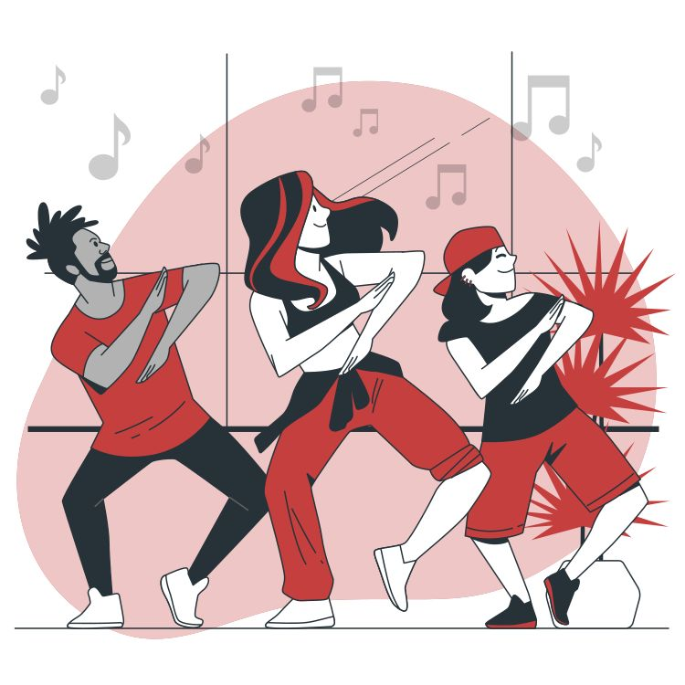

A juventude é uma fase de descobertas, desafios e transformações. É nesse período que começamos a construir nossa identidade, fazer escolhas importantes e desenvolver hábitos que podem influenciar toda a nossa vida. Em meio à rotina agitada, aos estudos, às redes sociais e às cobranças do dia a dia, cuidar de si mesmo pode parecer difícil. Porém, desenvolver hábitos saudáveis é um passo fundamental para viver melhor, tanto física quanto mentalmente. Ter hábitos saudáveis vai muito além de praticar exercícios ou manter uma alimentação equilibrada. Também significa cuidar da saúde mental, dormir bem, organizar o tempo, beber água, cultivar boas amizades, reservar momentos para o lazer e aprender a lidar com as próprias emoções. Pequenas atitudes, quando praticadas com frequência, podem gerar grandes mudanças ao longo do tempo. Mudar hábitos nem sempre é fácil. Muitas vezes, a falta de motivação, a procrastinação e o medo de falhar fazem com que desistamos antes mesmo de começar. Por isso, é importante entender que ninguém precisa mudar tudo de uma vez. O segredo está em dar pequenos passos, respeitar o próprio ritmo e compreender que cada progresso, por menor que pareça, já é uma conquista. É nesse contexto que surge o Diário de Sobrevivência, um espaço criado para incentivar os jovens a refletirem sobre suas rotinas, reconhecerem seus desafios e descobrirem maneiras de construir uma vida mais saudável e equilibrada. Mais do que buscar a perfeição, a proposta é aprender a cuidar de si, desenvolver a disciplina, fortalecer a autoestima e transformar boas intenções em atitudes diárias. Lembre-se: você não precisa ter tudo resolvido para começar a mudar. Cada dia é uma nova oportunidade de fazer escolhas melhores, aprender com os erros e se aproximar da pessoa que deseja ser. Sua jornada não precisa ser perfeita, apenas precisa começar. No Diário de Sobrevivência, cada pequeno hábito é uma ferramenta para enfrentar os desafios da vida e construir um futuro com mais saúde, equilíbrio e bem-estar. Afinal, sobreviver à rotina é importante, mas aprender a viver bem faz toda a diferença.